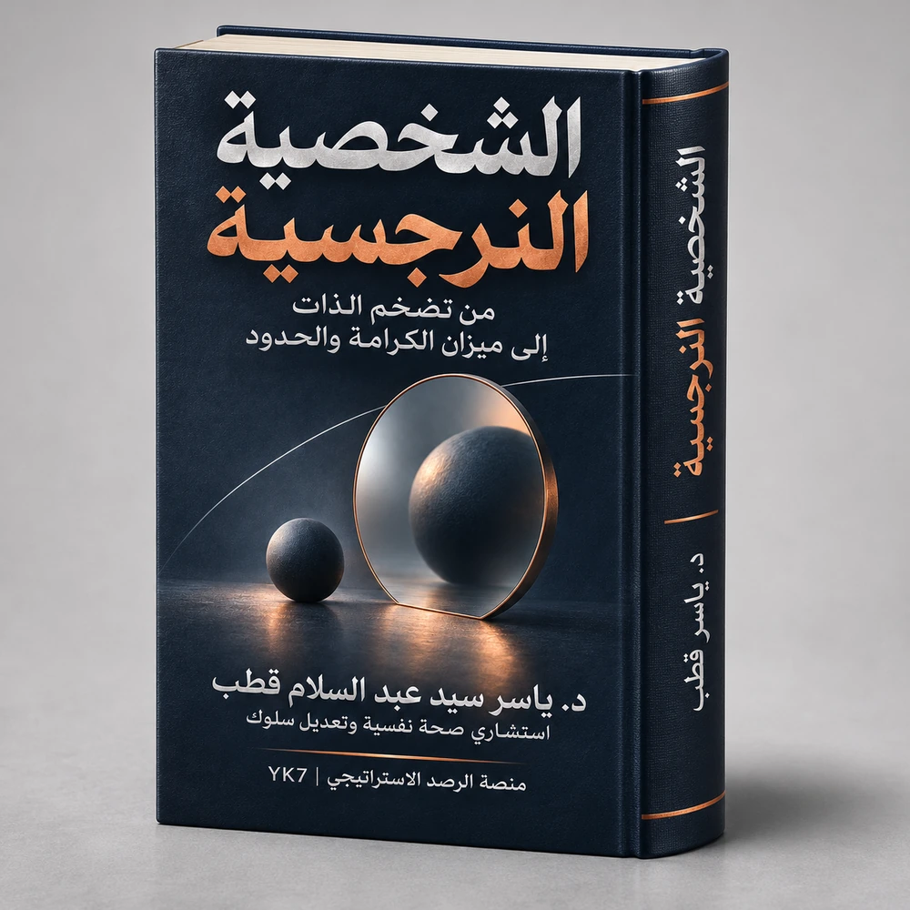
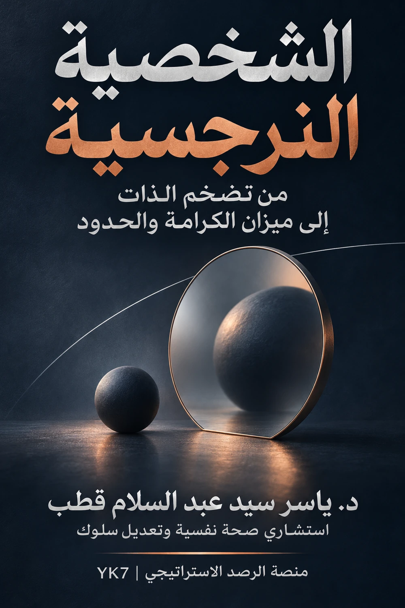

من مؤلفات د. ياسر قطب
الشخصية النرجسية
من تضخم الذات إلى ميزان الكرامة والحدود
قراءة تحليلية تميّز بين السمة والنمط والاضطراب، وتتجنب اختزال الإنسان في وصف تشخيصي؛ وتهتم بفهم السلوك المتكرر وآثاره، وصون الكرامة، وبناء الحدود المسؤولة.

عن الكتاب
يناقش الكتاب فهم السلوك الذي يُشار إليه بالنرجسية في سياقات العلاقات اليومية والمهنية، مع التمييز بين استخدام المصطلح بوصفه وصفًا سلوكيًا وبين التشخيص النفسي المتخصص. ويركز على الموازنة بين الفهم والإنصاف وحماية الحدود، وتجنب إصدار أحكام عامة على الأشخاص دون وقائع موثقة أو تقييم مهني ملائم. ويقدّم «ميزان الكرامة والحدود» بوصفه إطارًا إجرائيًا من بناء المؤلف.

فصل للقراءة من الكتاب — 10 صفحات أصلية
الفصل العشرون: أذى التقليل وكسر الثقة
حين يتحول نقد فعلٍ قابل للتصحيح إلى حكمٍ على قيمة الإنسان، يصبح أثر الكلمات أوسع من الموقف الذي قيلت فيه. يفحص الفصل متى يكون الكلام تصحيحًا مشروعًا، ومتى يصبح تقليلًا متكررًا يضعف الثقة بالكفاءة والمبادرة.
أهم ما يناقشه الفصل
- الفارق بين نقد الأداء والتجريد من القيمة والكرامة.
- مسارات التقليل: المقارنة المستمرة، وإبطال الإنجاز، والسخرية، والمعايير المتغيرة.
- أثر التقليل المتكرر في الثقة بالكفاءة، دون افتراض تأثير واحد على الجميع.
- أمثلة أسرية ومؤسسية تميز التقييم المنصف عن الإذلال.
- طرق التوثيق والتصحيح ووضع الحدود بحسب السياق ودرجة الخطر.
اقتباسات حرفية من الفصل
«الصمت لا يثبت القبول، كما أن الرد الحاد لا يثبت المبالغة.»
«فلا تُستخدم الكرامة لإسقاط المسؤولية، ولا تُستخدم المسؤولية لتبرير الإذلال.»
«فالخطأ فرصة للمراجعة، أما الشك الشامل في الجدارة فقد يوقف المحاولة قبل أن تبدأ.»
أهمية الفصل وقيمة الكتاب
يناقش الفصل أثر التحقير دون مساواة كل نقد قاسٍ بإساءة أو تشخيص صاحبه باضطراب نفسي. ويجمع بين كرامة الإنسان وحق الأسرة أو المؤسسة في تقويم الأداء ومساءلة الأفعال. ويتصل ذلك بمنهج الكتاب الأوسع في الفصل بين السمة والنمط الوصفي والاضطراب السريري؛ كما يستعمل «ميزان الكرامة والحدود» بوصفه إطارًا إجرائيًا من بناء المؤلف، لا مقياسًا طبيًا أو تشخيصيًا.
تتضمن صفحة القراءة نص الفصل العشرين ومراجعه فقط، ولا تتيح تنزيل الكتاب كاملًا.
فصل من الكتاب
الفصل الرابع عشر: قلب الأدوار وتبديل مواقع الضحية
يتناول الفصل انتقال الحوار من الواقعة الأصلية إلى محاكمة صاحب الشكوى، ويعرّف آلية قلب الأدوار وحدود الاستدلال بها، مع التمييز بين وصف السلوك وبين الجزم بالدوافع أو التشخيص. ويتضمن مراجع علمية مرتبطة بالمفهوم.
تحميل الفصل الرابع عشر — PDF (11 صفحة)